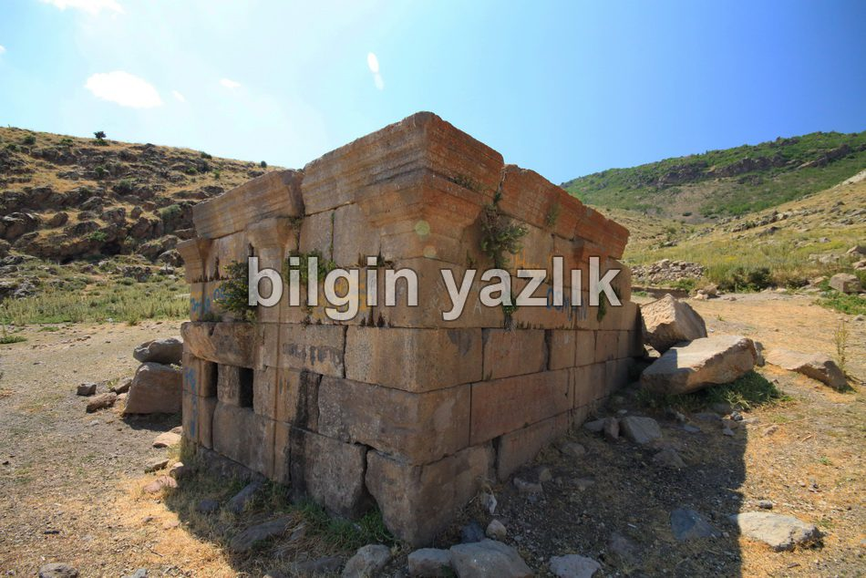
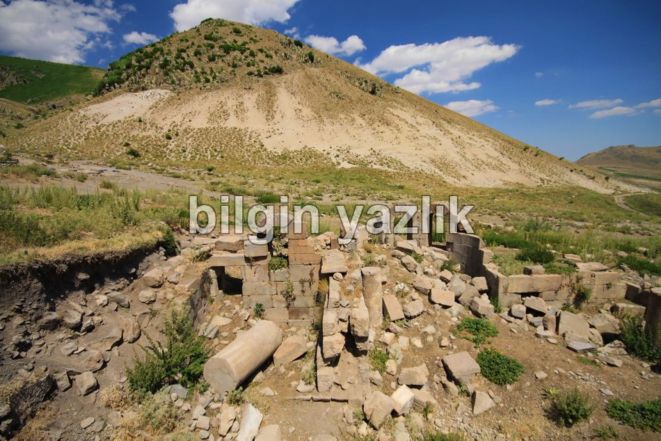
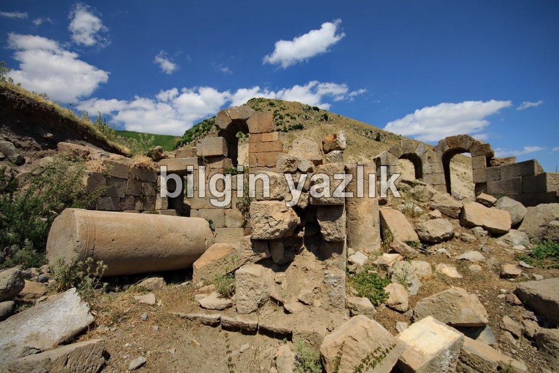
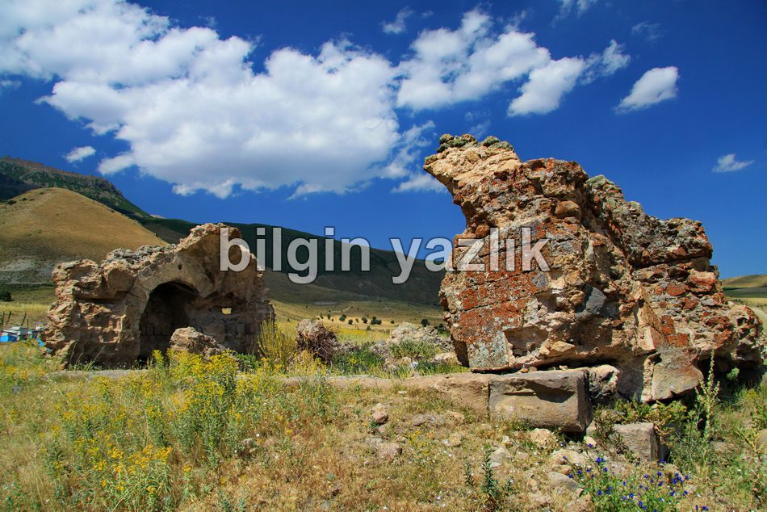

Gereme Harabeleri
Kayseri’nin Develi ilçesinde yer alan bu harabelere ulaşmak için iki farklı yol var. Birincisi Kayseri’den Erciyes dağı üzeri Develi’ye inerken Develi girişinde yolun sağında tabelaların eteğinden içeri giren yol, bu yolu kesinlikle tavsiye etmiyorum, jeepiniz yoksa bu yoldan hedefe ulaşmanız çok zor. İkinci yol ise Kayseri’den Develi’ye Erciyes üzerinden gelen yoldan Develi’ye girmeden ilk kavşaktan sağa gidince bulunabilir, bulunabilir diyorum çünkü buradaki yolda tabela yok ve yol asfalt da değil, tarla aralarına giren bir traktör yolu bu yol. Her neyse çok da kolay olmayan bir seyahatten sonra harabelere ulaşınca, yorgunluğunuz emin olun kaybolacaktır, çünkü bu güzelim yerleşke hala geçmişten çok ciddi izler taşıyor. Gereme harabeleri diye adlandırılmasının nedeni birkaç tane yıkık yapının varlığından kaynaklanıyor. Kilise, temeli kalmış birkaç ev ve sanırım bir de saray tarzı bir yapı var. Bunlardan en önemlisi bence kilise, çünkü şu an ayakta duran sütunları, oymaları v.s. oldukça iyi korunmuş durumda. Fakat ne var ki üç yıl arayla yaptığım iki ziyarette sonradan fotoğraflar üzerinden tespit ettiğim kadarı ile sütunlar çalınmış. Bu yapıların maalesef tamamının kaderi aynı, başına bekçi dikip korumadığınız sürece parça parça definecilerin gazabına uğruyorlar. Kilise’nin Bizans rahipleri tarafından kullanıldığı anlatılıyor, keşişler buradan Erciyes dağı zirvesindeki inziva mağarasına yürürlermiş. Duvarlarında bazı yazılar var, okuyup anlayan varsa buraya da anlamını yazarlarsa çok memnun oluruz. 50’li yıllarda bu kilisenin kubbesi bile ayakta imiş, öyle ki içerisinden Bizans askerlerine ait kıyafetler bile çıkarılmış. Hala ciddi bir kazı çalışması yapılması durumunda tarihe ışık tutacak çok sayıda parça çıkarılacaktır.




Bu yazı taliyol arşivinden taşınmıştır. · özgün kayıt